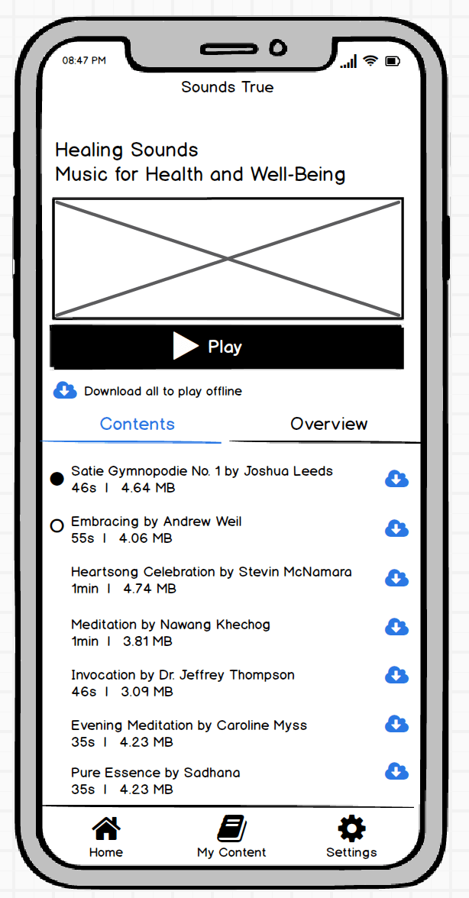

new navigation
summary
We are currently in the process for moving our ecommerce site from Magento to Shopify. Since the website will be created anew, we decided now would be a good time to make some much needed improvememts. One of these improvements is redeveloping the main navigation.
problem

No one was using the main navigation on the website. Customers were using search as their primary means of locating products and information.
A navigation should help users quickly find the product they are looking for by immediately narrowing the catalog. By defaulting to search, users were presented with a large search result list that they then had to filter themselves. In addition to the main navigation problem, the filters were not being used on the search results page, but that is another story.
hypothesis
Working with the design manager and product manager, we hypothesized that the reason why no one was using the main navigation was because the link text was too specific, confusing, and there were too many choices to choose from (11 links). A common complaint from our customers, that we receive from customer service, is that we have to many products, our website is confusing, and they don't know where to look.
We decided we would come up with a new navigation that would help users quickly find what they were looking for.
data to the rescue
Using the heatmap of the homepage, we determined that the top two task on the website were register/login (20% of clicks), and search (25% of clicks). We use a third-party service, Nextopia, to power our search on the website. I downloaded at the search terms from Q1 of 2019, and categorized the top 500 terms.
The results showed that the majority (44.8%) of search terms are for a specific author name. The next highest was topic (32.7%), followed by product title (13.1%). The rest of the search terms were below 3% each.
proposed solution
Working with the design manager and product manager, we took all this data and created new navigation that focused on the search terms our customers used. After two sets of in-person paper prototype tests, discussions with interal product teams, and several rounds of revisions, we finalized the wireframes.
Here is the wireframe for the main navigation:

Wireframe for the Author drop-down:

Wireframe for the Topic drop-down:

results
The designs for the new navigation are complete and we are currently in the process of implementing this new navigation. Stay tuned!
digital library pwa
summary
The Digital Library is what customers use to comsume the media they purchase from us. For example, someone purchases "Guided Mindfulness Meditation" audio download. In their Digital Library, they can listen to the product and download all of its files. We are replacing our native Digital Libray apps and the Digital Library section of our website with a PWA (progressive web app).
problem
How are our customers currently using the Digital Library? What problems are they having? What functionality does the new pwa need to have? What user flows does it need to provide? These are all things that need to be considered for the creation of the new pwa.
data to the rescue
Fortunately, we have several hundred app reviews for both our iOS and Android apps. Overall, customers were intially happy when the apps first came out. However, due to the lack of regular updates and enhancements, they were now disappointed in the apps' lack of features that are commonally found in similar applications, such as iTunes, Netflix, Amazon, eReaders, etc.
proposed solution
The need to ship a MVP quickly has restricted the list of features that are initially being implemented. The MVP will be a parity of the current experience, with a few of the glaring issues resolved.
Here are some of the wireframes for the MVP:
In future releases, we will be including these new features that customers had requested in their reviews: bookmarking within a media file, creating custom playlists, ten-second rewind and fast-forward buttons, closed captions, transcripts, ability to read an eBook withing the pwa, keyword search, offering similar products by the same author/genre.
research
I have run one round of in-person paper prototype use tests. The results were promising in that no major issues were discovered.
results
The PWA is currently in the process of being built. My schedule is to run a round of in-person user tests after every 2 dev sprints. Stay tuned!
podcast & blog website
summary
Currently our podcast and blog sites are separate. Our blog is on a Wordpress CMS and our podcast lives within our ecom website. We are going to migrate both to one Wordpress instance.
problem
How do people consume media on our podcast and blog sites? What problems are they having? What do they like about the sites? What functionality does the new site need to have? What user flows does it need to provide? These are all things that need to be considered for the creation of the new podcast & blog site. Our current podcast and blog users are both customers and non-customers, so we have to consider the needs of both.
data sort of to the rescue
We deployed a feedback widget on both the podcast and blog sites to try and gather information about users’ experience. We asked one question, “Help us improve our website! Rate your experience”. Unfortunately, due to several rude responses we had to turn off the widget earlier than we had hoped. The general gist of the responses indicated that users were happy with the current sites. The only constructive feedback we received was: the intro music to the podcast was too loud, the font on the podcast site is too hard to read, and not all of the blogs cited the author.
proposed solution
Since most of the responses from the feedback widget indicated that users were happy with the current sites, we decided to keep the same functionality in the new site. However, the marketing department and project stakeholders also added a few requirements to the list, including: tdb. Happily, these additional requirements appeared to enhance the user experience.
Here is the wireframes for the homepage:
research
I have ran one round of in-person paper prototype use tests. The results were promising in that no major issues were discovered.
results
The new podcast/blog site is currently in the process of being built. My schedule is to run several rounds of in-person user tests after the site is complete. Stay tuned!